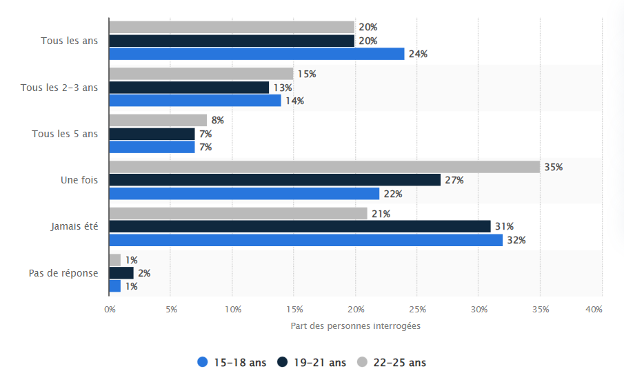

Il existe plusieurs structures de marché en économie qui déterminent la concurrence entre les entreprises et l'influence qu'elles ont sur les prix de leurs produits ou services. Pour notre entreprise, la structure de marché la plus appropriée est un oligopole. Cette structure de marché se caractérise par un grand nombre d'offreurs (loueurs de matériels pour le sport d’hiver) qui proposent des produits légèrement différenciés, c'est-à-dire qui ont des caractéristiques légèrement différentes mais qui restent substituables. Dans le cas d'une entreprise de location de ski, cela signifie qu'il y a plusieurs entreprises qui proposent des skis à louer, mais qui peuvent avoir des marques ou des modèles différents. Cette structure de marché permet aux entreprises de déterminer leurs propres prix, car elles ont une certaine influence sur le marché, mais elles doivent tout de même tenir compte de la concurrence et de la demande des consommateurs. Les demandeurs sont la partie la plus importante d’une entreprise. En effet, c'est grâce à eux qu’elle réalise son chiffre d'affaires. Ainsi, savoir cibler les demandeurs d’une entreprise est un point primordial qui donne des lignes directives dans le développement économique de celle-ci. Skiklö réalise des ventes pour des particuliers ainsi qu’à des entreprises. C’est donc des relations entre un professionnel et un consommateur (B2C en anglais) ou entre un professionnel et un autre professionnel (B2B en anglais) qui sont impliqués. Afin de satisfaire au mieux les demandeurs, il est important de bien les cibler.
Voici la répartition de la fréquence à laquelle les jeunes Français de 15 à 25 ans font du ski en 2020:
Ainsi en ce qui concerne les particuliers, on constate que pour la tranche d’âge 15-25 ans plus de 20% des Français sont allés au ski dans les 12 derniers mois. Notre stratégie économique sera donc de s'intéresser davantage à cette tranche d’âge pour savoir quels sont leurs goûts en matière de sport d’hiver. Nous pourrons ainsi sélectionner plus finement nos produits chez nos fournisseurs pour satisfaire ces clients. Nous savons également que 70% des skieurs en France louent leur matériel et n’ont pas leur propre matériel. Nous avons donc fait le choix d’uniquement nous focaliser sur la location et non la vente de matériel afin de cibler un plus large public. Les sports d’hiver représentent tout de même une grande part de demandeurs en France. Mais on constate aussi qu’elle concerne une population avec un niveau social élevé, en effet les lecteurs sont issus de tous les milieux sociaux : classe moyenne et les classes aisées. En revanche ce qui différencie ces skieurs ce sont les stations dans lesquelles ils vont, en effet selon les stations de ski les prix varient énormément ce qui explique des clients plus aisés dans des plus grandes stations plus chères tel que Courchevel, nous avons fait le choix d’implanter nos magasins dans ce type de stations dans lesquels des demandeurs plus aisés malgré que les charges soient plus élevées car nous ciblons un public qui peut se permettre de louer du matériel plus cher et de meilleure qualité.
Skiklö est implantée dans des stations de ski populaires, cela peut être un atout pour attirer les clients et augmenter sa visibilité.
Skiklö propose une large gamme de matériel de sports d'hiver, cela peut être un atout pour répondre aux besoins de différents types de clients.
Skiklö a des relations étroites et de confiance avec ses fournisseurs, cela peut lui permettre de disposer de produits de qualité à des prix avantageux.
Skiklö a une bonne réputation auprès des clients et de la communauté locale, cela peut lui apporter de la crédibilité et de la légitimité, ce qui peut être bénéfique pour attirer de nouveaux clients.
Skiklö a des employés compétents et motivés, cela peut lui permettre de proposer un service de qualité et de satisfaire les besoins des clients.
Skiklö est implantée dans une station de ski moins fréquentée, cela peut être un handicap pour attirer les clients et augmenter sa visibilité.
Skiklö ne propose qu'un nombre limité de matériel de sports d'hiver, cela peut être un frein pour répondre aux besoins de différents types de clients.
Skiklö pourrait étendre son activité en ouvrant de nouveaux magasins dans d'autres stations de ski ou dans de nouvelles régions.
Skiklö pourrait développer de nouveaux produits, comme des accessoires de ski ou des vêtements de sports d'hiver, pour compléter son offre.
Skiklö pourrait établir des partenariats avec d'autres entreprises ou organisations pour promouvoir ses produits et services.
Skiklö pourrait profiter d'une augmentation du tourisme dans les stations de ski, cela pourrait augmenter la demande de ses produits et services.
Skiklö pourrait étendre son offre de services en proposant des activités de plein air ou des cours de ski par exemple.
Skiklö pourrait améliorer sa stratégie de marketing pour mieux cibler ses clients et ainsi augmenter sa visibilité et sa clientèle.
Skiklö peut être menacée par la concurrence de la part d'autres entreprises de location de matériel de sports d'hiver dans la région.
si la saison de ski est perturbée par un manque de neige, cela peut affecter la fréquentation des stations de ski et donc la demande pour le matériel de sports d'hiver.
si les conditions climatiques sont de plus en plus imprévisibles ou extrêmes, cela peut être un frein pour les activités de sports d'hiver et donc pour la demande de matériel de sports d'hiver.
si des accidents ou des incidents de sécurité surviennent dans les stations de ski, cela peut affecter la confiance des clients envers les activités de sports d'hiver et donc la demande de matériel de sports d'hiver.
si les modes de consommation ou les goûts des clients évoluent, l'entreprise Skiklö peut être menacée par des changements de tendances qui peuvent affecter sa demande.
Plusieurs facteurs peuvent déterminer l’empreinte carbone de notre entreprise de location de ski:
D’autre part, notre entreprise contribue aux départs au ski ce qui contribue au développement des stations de ski et à l’impact économique qui va avec. Par exemple: 1 canon à neige 20k-30k kWH, énergie pour alimenter les remontées mécaniques, énergie pour alimenter les bâtiments, transport des matériaux pour entretenir les pistes de ski.
Pour juger de l'empreinte carbone Skiklö, il faut prendre en compte :
Il est important de prendre en compte l'ensemble de ces éléments pour obtenir une image complète de l'empreinte carbone de Skiklö.
Pour évaluer l'empreinte carbone de l'entreprise de location de ski Skiklö, voici quelques éléments qui pourraient être pris en compte :
Pour évaluer l'empreinte carbone d'une entreprise de location de ski, plusieurs éléments doivent être pris en compte. Tout d'abord, il est important de considérer que l'entretien et le stockage des équipements de ski doivent être pris en compte. Si l'entreprise utilise de l'énergie produite à partir de combustibles fossiles pour ces tâches, cela peut contribuer à l'empreinte carbone de l'entreprise. La production et le transport des équipements de ski sont également des éléments à prendre en compte. Si ces éléments sont produits de manière peu durable ou sont transportés de manière peu efficace du point de vue énergétique, cela peut également avoir un impact sur l'empreinte carbone de l'entreprise. En outre, il est important de considérer l'énergie utilisée dans les magasins et les équipements de ski, comme les remontées mécaniques et l'éclairage. Le fait de ne pas utiliser de sources d'énergie renouvelables peut augmenter l'empreinte carbone de l'entreprise. Enfin, il est important de prendre en compte les pratiques de gestion des ressources naturelles, comme l'eau et l'air. Une gestion non responsable de ces ressources ne contribue pas à réduire l'empreinte carbone de l'entreprise. Il est également utile de connaître les pratiques environnementales des fournisseurs de l'entreprise pour avoir une idée de l'impact de l'entreprise sur l'environnement à toutes les étapes de la chaîne d'approvisionnement. En somme, pour évaluer l'empreinte carbone d'une entreprise de location de ski, il est important de prendre en compte tous ces éléments afin de comprendre l'impact de l'entreprise sur l'environnement.
Il faudrait privilégier le rendu du travail au format numérique. En effet, la production de papier a un impact
environnemental considérable, en raison de l'énergie et des ressources nécessaires pour le produire et le transporter.
Pour sa part, le rendu au format numérique n’implique ni production ni transport, ce qui réduit considérablement
l’impact environnemental. C’est donc pour cela que le mode de rendu le moins impactant pour l'environnement est le rendu
numérique du dossier.
Pour ce qui est d’estimer l’empreinte environnementale de la production de vidéo d’un site web, on peut prendre en compte
l’énergie utilisée pour produire et diffuser le contenu (Vidéo) ou l’hébergement (Site Web).
Pour déterminer le mode de rendu ayant l'empreinte environnementale la plus faible, il faut comparer leur impact sur l’environnement :
Le mode de rendu ayant l'empreinte environnementale la plus faible est donc la version numérique. Pour estimer l'empreinte environnementale des autres productions demandées, il faut prendre en compte :
Le mode de rendu ayant l'empreinte environnementale la moins forte serait de rendre le dossier sous format numérique, plutôt que sous forme papier. La production de papier a en effet un impact important sur l'environnement, notamment en raison de la consommation d'énergie et de l'utilisation de ressources naturelles telles que les arbres. Pour estimer l'empreinte environnementale de la production de vidéos ou de sites web, il faudrait prendre en compte plusieurs éléments, tels que :
Il faudrait également prendre en compte l'impact des transports et de l'hébergement liés à la production, ainsi que l'impact de l'utilisation des outils et des équipements (par exemple, les ordinateurs et les logiciels utilisés pour la création de contenu).
Il est vrai que la production de papier peut avoir un impact sur l'environnement, notamment en termes de déforestation et de consommation d'eau et d'énergie. Cependant, en France, la production de papier est contrôlée et est principalement obtenue à partir de coupes d'éclaircie et de chutes de scieries, ce qui réduit son impact sur la déforestation. De plus, en optant pour des labels écologiques tels que PEFC, Écolabel, FSC ou NF Environnement, il est possible de minimiser l'impact environnemental du papier. Le numérique a également un impact environnemental, notamment en termes de consommation d'énergie et de ressources minérales et fossiles. Le stockage des données en ligne peut également avoir un impact environnemental important, ce qui n'est pas le cas du papier. Cependant, le numérique a également de nombreux avantages en termes de réduction de l'utilisation de papier et de la consommation d'énergie liée à l'impression et au transport de documents. En fin de compte, il est important de trouver un équilibre entre l'utilisation du papier et du numérique et de prendre en compte les impacts environnementaux de chaque mode de rendu. Il est également important de privilégier des options durables et écologiques, qu'il s'agisse de la production de papier ou de l'utilisation du numérique.